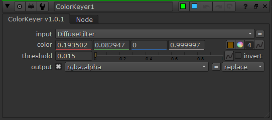

Keyer¶
键出, 用于获取alpha
ColorKeyer¶

获取相近颜色范围
控制¶
 DirectionLightKeyer¶
DirectionLightKeyer¶

获取将会被虚拟方向光照到的范围¶
输入和控制¶
输入 |
功能 |
|---|---|
<无名称> |
图像数据 |
axis |
虚拟光所使用的空间轴 |

ObjectID¶
根据颜色分ID, 配合渲染器使用
PositionKeyer¶
获取不随镜头变化的固定位置
基本使用方法¶
将节点连接至拥有位置层的节点,并设置sample layer(通常是P层)
拖动查看器中的控制器, p1代表要的部分, p0代表不要的部分
结果为输出的alpha, r,g,b通道分别显示在x,y,z轴上的输出
小技巧
可以也用于depth层来得到随镜头变化远近范围,不过此时旋转无效(因为depth只有一个通道)。
模式¶
模式 |
效果 |
|---|---|
Ramp(渐变) |
单方向渐变 |
Distance(距离) |
以p1为中心的双方向渐变,两侧距离相等 |
Sphere(球) |
以p1为中心,p1到p0距离为半径的球体范围 |
渐变模式¶
距离模式¶
球模式¶
输入和控制¶

输入 |
功能 |
|---|---|
<无名称> |
读取位置信息 |
控制 |
功能 |
|---|---|
sample layer |
用于采样的层, 通常为P或者depth |
mode(模式) |
选择应用的算法模式 |
blackpoint(黑点) |
p0的值,用于决定输出为0的位置。通常通过取样器设置,但难以取样时也可手动设置。 |
blackpoint(白点) |
p1的值,用于决定输出为1的位置。通常通过取样器设置,但难以取样时也可手动设置。 |
rotation x/y/x (旋转x/y/x) |
对输入的位置空间进行旋转, 顺序为x,y,z |
scale(缩放) |
对输入的位置空间以p1为中心进行反向缩放, 以得到缩放效果 |
output |
选择将影响结果的坐标轴 |
channel |
结果输出通道,可选择原先通道的处置方法:replace(替换),intersect(交集),union(并集) |
preset(预设) |
预先定义的output预设 |